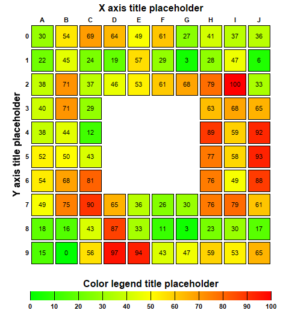

This example demonstrates adding labels to the cells, adding gaps between cells and using a custom color scale.
This example is similar to
Discrete Heat Map, with the following additions:
The following is the command line version of the code in "cppdemo/heatmapcelllabels". The MFC version of the code is in "mfcdemo/mfcdemo". The Qt Widgets version of the code is in "qtdemo/qtdemo". The QML/Qt Quick version of the code is in "qmldemo/qmldemo".
#include "chartdir.h"
int main(int argc, char *argv[])
{
// The x-axis and y-axis labels
const char* xLabels[] = {"A", "B", "C", "D", "E", "F", "G", "H", "I", "J"};
const int xLabels_size = (int)(sizeof(xLabels)/sizeof(*xLabels));
const char* yLabels[] = {"0", "1", "2", "3", "4", "5", "6", "7", "8", "9"};
const int yLabels_size = (int)(sizeof(yLabels)/sizeof(*yLabels));
// Random data for the 10 x 10 cells
RanSeries* rand = new RanSeries(2);
DoubleArray zData = rand->get2DSeries(xLabels_size, yLabels_size, 0, 100);
// We set the middle 5 x 5 cells to NoValue to remove them from the chart
for(int x = 3; x < 7; ++x) {
for(int y = 3; y < 7; ++y) {
((double*)(zData.data))[y * xLabels_size + x] = Chart::NoValue;
}
}
// Create an XYChart object of size 480 x 540 pixels.
XYChart* c = new XYChart(480, 540);
// Set the plotarea at (50, 40) and of size 400 x 400 pixels. Set the background, border, and
// grid lines to transparent.
PlotArea* p = c->setPlotArea(50, 40, 400, 400, -1, -1, Chart::Transparent, Chart::Transparent);
// Create a discrete heat map with 10 x 10 cells
DiscreteHeatMapLayer* layer = c->addDiscreteHeatMapLayer(zData, xLabels_size);
// Set the x-axis labels. Use 8pt Arial Bold font. Set axis stem to transparent, so only the
// labels are visible. Set 0.5 offset to position the labels in between the grid lines. Position
// the x-axis at the top of the chart.
c->xAxis()->setLabels(StringArray(xLabels, xLabels_size));
c->xAxis()->setLabelStyle("Arial Bold", 8);
c->xAxis()->setColors(Chart::Transparent, Chart::TextColor);
c->xAxis()->setLabelOffset(0.5);
c->xAxis()->setTitle("X axis title placeholder", "Arial Bold", 12);
c->setXAxisOnTop();
// Set the y-axis labels. Use 8pt Arial Bold font. Set axis stem to transparent, so only the
// labels are visible. Set 0.5 offset to position the labels in between the grid lines. Reverse
// the y-axis so that the labels are flowing top-down instead of bottom-up.
c->yAxis()->setLabels(StringArray(yLabels, yLabels_size));
c->yAxis()->setLabelStyle("Arial Bold", 8);
c->yAxis()->setColors(Chart::Transparent, Chart::TextColor);
c->yAxis()->setLabelOffset(0.5);
c->yAxis()->setTitle("Y axis title placeholder", "Arial Bold", 12);
c->yAxis()->setReverse();
// Set a 3-pixel gap between cells
layer->setCellGap(3);
// Use the z value as the cell label
layer->setDataLabelFormat("{z|0}");
// Position the color axis 20 pixels below the plot area and of the width as the plot area. Put
// the labels at the bottom side of the color axis. Use 8pt Arial Bold font for the labels.
ColorAxis* cAxis = layer->setColorAxis(p->getLeftX(), p->getBottomY() + 20, Chart::TopLeft,
p->getWidth(), Chart::Bottom);
cAxis->setLabelStyle("Arial Bold", 8);
cAxis->setTitle("Color legend title placeholder", "Arial Bold", 12);
// Set the color stops and scale of the color axis
double colorScale[] = {0, 0x00ff00, 50, 0xffff00, 80, 0xff6600, 100, 0xff0000};
const int colorScale_size = (int)(sizeof(colorScale)/sizeof(*colorScale));
cAxis->setColorScale(DoubleArray(colorScale, colorScale_size));
cAxis->setLinearScale(0, 100, 10);
// Output the chart
c->makeChart("heatmapcelllabels.png");
//free up resources
delete rand;
delete c;
return 0;
}
© 2023 Advanced Software Engineering Limited. All rights reserved.